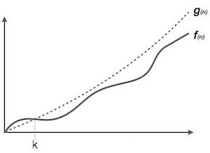

Asymptotic analysis of an algorithm, refers to defining the mathematical boundation/framing of its run-time performance. Using asymptotic analysis, we can very well conclude the best case, average case and worst case scenario of an algorithm.
Asymptotic analysis are input bound i.e., if there's no input to the algorithm it is concluded to work in a constant time. Other than the "input" all other factors are considered constant.
Asymptotic analysis refers to computing the running time of any operation in mathematical units of computation. For example, running time of one operation is computed as f(n) and may be for another operation it is computed as g(n2). Which means first operation running time will increase linearly with the increase in n and running time of second operation will increase exponentially when n increases. Similarly the running time of both operations will be nearly same if n is significantly small.
Usually, time required by an algorithm falls under three types −
Best Case − Minimum time required for program execution.
Average Case − Average time required for program execution.
Worst Case − Maximum time required for program execution.
Following are commonly used asymptotic notations used in calculating running time complexity of an algorithm.
Ο Notation
Ω Notation
θ Notation
The Ο(n) is the formal way to express the upper bound of an algorithm's running time. It measures the worst case time complexity or longest amount of time an algorithm can possibly take to complete.
For example, for a function f(n)
Ο(f(n)) = { g(n) : there exists c > 0 and n0 such that g(n) ≤ c.f(n) for all n > n0. }
The Ω(n) is the formal way to express the lower bound of an algorithm's running time. It measures the best case time complexity or best amount of time an algorithm can possibly take to complete.

For example, for a function f(n)
Ω(f(n)) ≥ { g(n) : there exists c > 0 and n0 such that g(n) ≤ c.f(n) for all n > n0. }
The θ(n) is the formal way to express both the lower bound and upper bound of an algorithm's running time. It is represented as following −

θ(f(n)) = { g(n) if and only if g(n) = Ο(f(n)) and g(n) = Ω(f(n)) for all n > n0. }
| constant | − | Ο(1) |
| logarithmic | − | Ο(log n) |
| linear | − | Ο(n) |
| n log n | − | Ο(n log n) |
| quadratic | − | Ο(n2) |
| cubic | − | Ο(n3) |
| polynomial | − | nΟ(1) |
| exponential | − | 2Ο(n) |